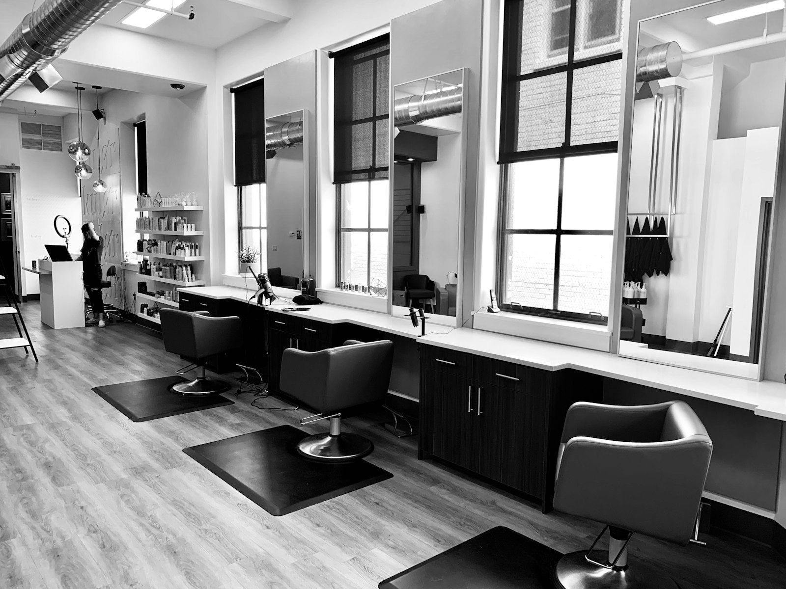

Fleur.
葉先の朝露から白いユリへ、最後に香水瓶へ。6秒の無音広告で香りを先に想像させ、商品ページで香りの変化をたどれるようにしました。
商品のLPを見るすべて自主制作です
葉先の朝露から白いユリへ、最後に香水瓶へ。6秒の無音広告で香りを先に想像させ、商品ページで香りの変化をたどれるようにしました。
商品のLPを見る
落ち着いた時間を過ごしたい人に向けた美容室のサイト。写真と余白でサロンの雰囲気を伝え、来店を考えた瞬間に予約先が見つかる構成にしました。
サイトを見る→自主制作の8作品。気になる作品を選ぶと、実際の画面や設計の意図を確認できます。
横にスワイプできます

30代の働く女性向けセレクトショップを想定

記念日や特別な日に利用したいカップル・ファミリー層向けのレストランを想定

新規取引先の開拓を目指す中小企業向けのコーポレートサイトを想定
近隣に住む方がふらっと立ち寄りたくなる、街のカフェを想定
Webサイトは「作って終わり」ではなく、作ったあとにどう届けるかまで考えて作っています。
現在、Instagram・Threadsの3アカウントを自分で企画・運用し、楽天ROOMとnoteにつなげる導線まで回しています。
狭いキッチンの収納・掃除。買う前に「測る」チェックを軸に、サイズや価格を調べた比較で紹介しています。
クレンジングなどのスキンケア。成分や使い方の調べた情報を、比較として分かりやすく伝えています。
お取り寄せスイーツ。送料込みの価格比べなど、「選ぶときの迷い」を減らす切り口で紹介しています。
「ホームページやLPを作るだけでなく、公開後の集客・導線の考え方まで一緒に相談できます。」
同じ商品の広告を複数の配信先に用意する手間を減らすツール。商品名とコピーを入力し、サイズ・配色を選ぶと、そのまま配信用のPNGを保存できます。
画像を作ってみる北海道を拠点に、Webデザインと実装を手がけています。お店のページを作るとき、最初に考えるのは、初めて訪れた人が何を知りたいか。写真を大きく見せる場所も、予約ボタンを置く位置も、その人の目線で決めています。
同じ商品でも、広告では最初の一瞬に目が留まること、アプリでは次の操作が自然にわかることを大切にしています。このページでは、その違いを実際に見て、触っていただけるようにしました。
ご相談の段階では、仕様書がなくても大丈夫です。「この商品の魅力が伝わりにくい」「この作業に時間がかかる」といったお話から、必要な画面や表現を一緒に考えます。
LP制作 30,000円〜 ／ コーポレートサイト 50,000円〜 ／ 修正・保守 5,000円〜。
ヒアリング後にお見積りし、デザイン確認、実装、納品の順に進めます。広告動画・アプリ開発は内容に応じて個別にお見積りします。
ページ数・機能・デザインの複雑さによって変動いたします。ヒアリングの上、ご予算に応じたプランをご提案させていただきますので、まずはお気軽にご相談ください。
はい、可能です。ご相談やお見積もりは無料で承っております。まずはお気軽にお悩みをお聞かせください。
もちろん大丈夫です。丁寧なヒアリングを通じて、お客様の「こうしたい」というイメージを一緒に形にしていきますので、ご安心ください。
制作する内容にもよりますが、おおよそ一週間から三週間ほどいただいております。お急ぎの場合は、スケジュールに合わせて柔軟に対応いたします。
基本的に3回まで無料で対応しております。それ以降も、ご納得いただけるまで誠実に対応させていただきますので、その都度ご相談ください。
はい、ございます。納品後1ヶ月間は、万が一の表示崩れやバグが見つかった場合、無料で修正対応いたします。操作方法についてのご質問にも引き続きお答えいたしますので、ご安心ください。
作りたいものや、今お困りのことをお聞かせください。